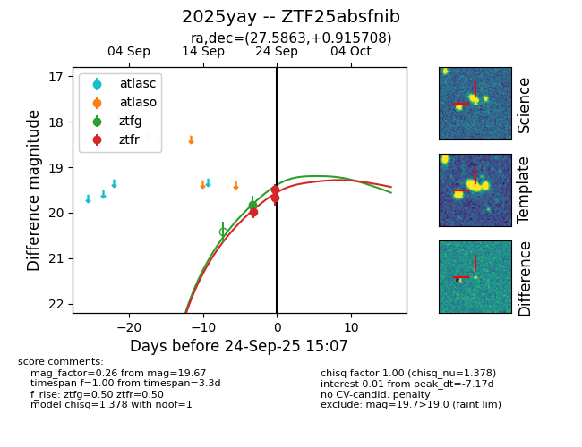
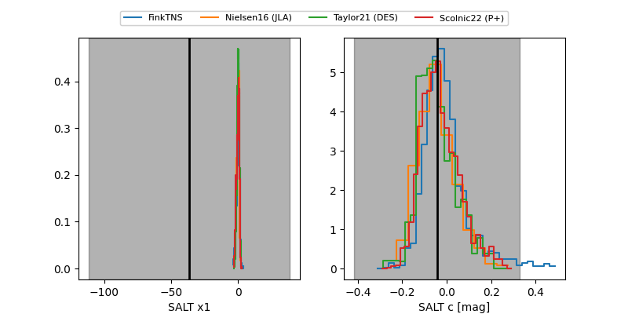

FINK: ZTF25absfnib
Lasair: ZTF25absfnib
ALeRCE: ZTF25absfnib
TNS: 2025yay
YSE: 2025yay
ZTF25absfnib (ztf,fink)
2025yay (tns,yse)
equatorial (ra, dec) = (27.5863,+0.91571)
galactic (l, b) = (152.1120,-58.57831)


last ztfg=19.83, ztfr=19.67
1 ztfg, 3 ztfr detections